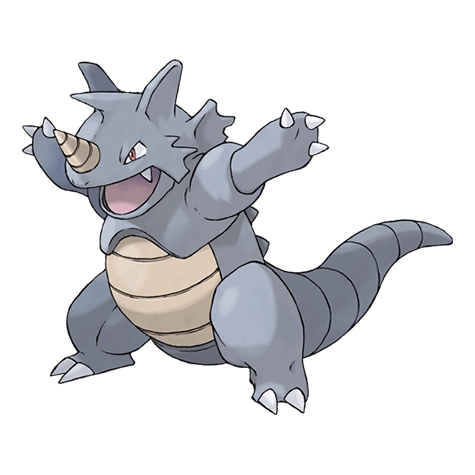
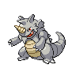

Назад
Райдон

Райдон — Покемон 1 поколения под номером 112 в Покедекс. Обитает он в регионе Канто и относится к Каменному и Земляному типу. Рог Райдона может раздавить даже неогранённые алмазы. Одним ударом хвоста он способен снести здание. Шкура этого Покемона чрезвычайно прочная. Даже прямые попадания из пушки не оставляют на нём ни царапины.
Тип:
Земляной
Каменный
Эволюция

# 112 Райдон